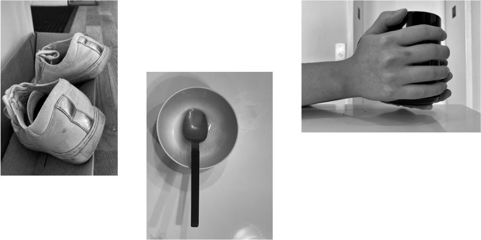

(Non-)Human
Showcase
ITP Thesis Week 2020
Tools
Arduino, Webcam, RealSense, PoseNet, Node.js, GAN, MongoDB, Custom Bed Frame, Stepper Motors, Bedsheet
What is human, what is not human, what is in-between? (Non-)Human is an art
installation that conjures the hidden human-ness in objects and imagines a
speculative world where a human exists in non-human forms.
It is the thesis project of my master's program at ITP, NYU.
Abstract
We live a life surrounded by objects we build to serve us — curtains, lamps, and many others. We use our body to interact with these objects - rubbing our face against warm towels, or sinking into a fluffy bed. We, as humans, rarely consider them to be part of us. We tend to think of ourselves as different - we’re the ones with spirituality, reason, intelligence, while they’re not.
Yet, objects keep our traces, like dents in our shoes, or the erased keys on our laptop. Objects carry our memories, like an inherited music box, or a bowl with the smell of mom’s favorite recipe. Objects also shape us either physically or behaviorally: like a scar from a knife cut; or a spontaneous “sorry” when we bump into a table. All of these suggest a possible deeper connection between humans and objects, which we don’t notice on a daily basis.

The advancements in modern physics have pointed out the similarity between humans and objects in terms of materiality. Emerging technology such as ML / AI has shown the promise of non-human intelligence through computation. More than ever, the borderline between human and object has become blurred. If there is a spectrum that measures the level of Human-ness vs. Object-ness, what lies in the middle ground? How close might an object endowed with a certain level of intelligence or consciousness be to a human?
As a response, my thesis project, (Non-)Human, is a series of art installations that explore the semi-human, semi-object territory by creating humans in non-human forms. The initial piece of this series which is a bedsheet that tweaks and bends in the form of its owner, now up and out for the day. Future pieces will include a mask that has learned to breathe by itself, and a camera that only opens its shutter when it sees what its owner sees.

Research
The project concept is based on research in three domains: discoveries in physics and cosmology regarding the origin of life and human; the philosophical notions about our relationship of consciousness to the university as a whole; and related religious roots.
Discoveries in physics and cosmology have brought forth the concept that humans, and all life and stuff on earth are star stuff––all born of the big bang. This has provided grounds for this project to discuss both the similarity in materiality between human and object, and the possibility of creating consciousness/intelligence in objects by understanding how the “human events” take place. Research into the theory of consciousness, or the philosophy of mind, provides a broader picture on the nature of consciousness that ranges from consciousness in matter (e.g. Panpsychism) to consciousness in machines (e.g Post-/Trans-humanism, Humanity+ and the coming AI take-over).
(Non-)Human is the result of approaching this topic from a technological perspective within this big picture, especially by using technology as a bridge to connect human behaviors with object behaviors. Finally, research into related religious roots, including Buddhism and Shinto, allows this project to borrow the metaphor of gods/spirits that inhabit all entities and to build on top of these historical touchstones under the semi-human, semi-object theme with a contemporary interpretation.
The Making of (Non-)Human


I began my design by referencing a piece of artwork called Kotoba made by a Japanse artist Kimura Koichiro. He took a series of photographs of his family sleeping, and as you can see here, although he’s not in the picture, the imprints on the bedsheet gave away his existence.
This gave me the idea of re-creating imprints. By putting a human body on top of a flat bedsheet, imprints can be made when the body is moving and rubbing against the fabric. Then when you take out the body, the imprints will be revealed.
To find out what type of movements I should use to create the imprint, I recorded myself sleeping overnight, and narrowed down to three major categories: Side Curl, Laying Flat, and Roll-over.
I tested with human-like objects, such as a wooden mannequin, to get an idea of the look and feel of human imprints. It made me realized the importance of having a structure with parts that are inherently connected.
In this way, the impression of a human can be translated onto a piece of fabric thanks to the combinations of crumbles. It also helped me figure out which joints are necessary and which ones are not.
Then I built a bed frame mounted with eight stepper motors. These steppers represent eight major joints on a human body- shoulders, elbows, hips, and knees.
They were attached to inter-locked structures that can move in either a linear or circular fashion, which gave them the inherent connection.
After that, I put a flat foam surface above them, carved holes to make room for the structure to move in between, and finally, put a piece of bedsheet on top, so that I can move it with the structure underneath.


To figure out the mapping relationship between joint movement of a human skeleton and joint movement of the bedsheet, I calibrated my own movement with PoseNet and RealSense, and used it as a baseline to determine the range, velocity, and dynamics of the motors’ movements.
In order to create an abstraction of a human and use it to drive the actual movement of the bed sheet, I trained a GAN with my sleeping recordings, and applied movement tracking on top of the generated images. These movements were then recorded in MongoDB, and became the final dataset I used to drive the bedsheet.
The final result is a moving bedsheet with movements generated as time goes by. It originates from a human, but it is beyond human. These abstractions of moving elbows and knees are the ones that conjure the human-ness in this non-human object.